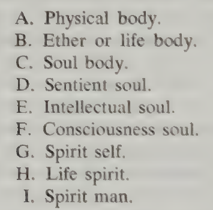

O ser humano tríplice e quádruplo, explicado
Aprenda o significado de cada conceito, por que Steiner o distingue e como as diferentes descrições se relacionam.
Comece pelos fundamentos teóricos abaixo. Leia primeiro corpo, alma e espírito; depois, pensar, sentir e querer; por fim, a descrição quádrupla. Os diagramas e as seções de referência detalhadas vêm depois das explicações. Retome esta página quando um curso pressupuser esses conceitos.
Compreenda o ser humano antes de aprender as classificações
Uma classificação só ajuda quando sabemos a que pergunta ela responde. Comece pelo significado dos conceitos, acompanhe a razão para distingui-los e só então aprenda seus nomes em conjunto. “Tríplice” significa considerado sob três aspectos; “quádruplo”, sob quatro. Os números não contam pessoas separadas nem camadas anatômicas.
1. Corpo, alma e espírito: três relações com o mundo
A primeira pergunta é: como participo de um encontro com o mundo? Steiner distingue o contato corporal, a experiência interior pessoal e o reconhecimento de significado ou verdade. Ele chama esses aspectos de corpo, alma e espírito. A distinção trata de três aspectos de um encontro, sem dividir a vida em compartimentos isolados.
Corpo significa nossa participação corporal no mundo material. Os órgãos dos sentidos possibilitam a percepção; o movimento permite agir. O corpo também tem processos e necessidades próprios. Ao tocar uma xícara, o contato e as condições corporais da sensação pertencem a esse aspecto.
Alma significa a vida interior na qual um encontro se torna sua experiência: você sente calor, aprecia a sensação, lembra outra ocasião, deseja beber ou hesita. A alma inclui sensação, desejo e intenção, além de emoção. A temperatura mensurável da xícara e sua experiência do calor respondem a perguntas diferentes.
Espírito, neste início de Teosofia, diz respeito à capacidade de reconhecer um significado ou uma relação cuja validade não depende do gosto pessoal. Você pode compreender por que a xícara esfria, mesmo desejando que permaneça quente. Steiner desenvolve essa ideia numa concepção de realidade e individualidade espirituais; o exemplo cotidiano introduz a distinção sem demonstrar essa concepção mais ampla.
Por que distinguir? Explicar a temperatura da xícara ainda não descreve o que seu calor significa para você. Seu prazer não determina se uma explicação do resfriamento está correta. Processo corporal, experiência interior e conhecimento se relacionam, mas uma descrição não substitui simplesmente as outras duas.
Um encontro, três aspectos

Aquarela original gerada por IA para este curso; não é uma obra de Steiner. As cores são escolhas artísticas.
- Esquerda · Corpo: os órgãos dos sentidos e o contato corporal tornam possível o encontro.
- Centro · Alma: o encontro se torna experiência pessoal, com prazer, sentimento e interesse.
- Direita · Espírito: buscar uma relação válida para além da preferência pessoal introduz a distinção de Steiner entre fruição e conhecimento.
São aspectos da mesma pessoa em um encontro. Cada cena destaca um aspecto; nenhuma exclui os demais. A última introduz o conhecer, não toda a concepção de espírito em Steiner.
Fonte e contexto: Theosophy · GA 9 · I · Ver imagem em tamanho integral
2. Pensar, sentir e querer: atividades, não outra lista de corpos
Pensar é a atividade de formar e relacionar significados: comparar, perguntar, julgar e buscar compreensão. Sentir é como uma experiência importa interiormente: atração, inquietação, alegria ou tristeza. Querer é o movimento em direção ao fazer: intenção, esforço e realização numa ação. As três atividades cooperam; uma decisão pode envolver todas elas.
Considere devolver uma xícara emprestada. Você compreende que ela pertence à vizinha; sente gratidão ou relutância; decide devolvê-la e a leva de volta. O exemplo distingue atividades num mesmo acontecimento. Ele não atribui cada atividade exclusivamente a uma região do corpo.
Não traduza corpo–alma–espírito por querer–sentir–pensar como se fossem palavras intercambiáveis. A primeira distinção trata da relação com o mundo; a segunda, de atividades da vida interior. Pensar tem condições corporais, é vivido interiormente e pode dirigir-se à verdade. Quando um texto disser “tríplice”, pergunte primeiro qual distinção está fazendo.
3. Corpo físico, corpo etérico, corpo astral e Eu: quatro perguntas organizadoras
A descrição quádrupla pergunta: o que uma descrição do ser humano vivo, senciente e autoconsciente precisa incluir? Steiner distingue existência material, formação viva, experiência interior e individualidade. Nomeia os membros correspondentes como corpo físico, corpo etérico ou vital, corpo astral e Eu. “Membro” significa aqui um aspecto distinguível do todo.
Corpo físico: o que dá existência material ao ser humano? É o corpo considerado em relação às substâncias e forças físicas. Um corpo vivo também é físico; “físico” não significa morto. Resta explicar a organização desse material como um todo vivo.
Corpo etérico ou vital: o que mantém e desenvolve uma forma viva? Steiner propõe uma organização formativa que atua no crescimento, na manutenção e na reprodução. “Etérico” nomeia essa organização suprassensível proposta; não é uma substância química nem o éter antes proposto na física. Folhas em crescimento ilustram o problema da forma viva; observá-las não demonstra, por si só, sua explicação.
Corpo astral: o que torna um ser capaz de experiência interior? Steiner associa esse membro à sensação, ao prazer, à dor, ao desejo e à capacidade de experiência consciente. A distinção decisiva é entre um processo vivo e a vivência de algo. “Astral” aqui não significa horóscopo. Em Teosofia, a terminologia detalhada distingue aspectos da alma que este esquema quádruplo introdutório não reproduz.
Eu: quem pode assumir uma relação individual com essas experiências? Na concepção de Steiner, o Eu é o centro da individualidade espiritual, capaz de trabalhar sobre os outros membros e transformá-los. É mais que egoísmo ou um rótulo de personalidade. Dizer “sinto raiva, mas vou reconsiderar minha resposta” ilustra a relação consigo mesmo; não demonstra toda a teoria espiritual do Eu.
A sequência importa: primeiro a existência material, depois a organização viva, a experiência interior e a individualidade. Cada passo introduz outra pergunta explicativa. Não são quatro camadas visíveis; o diagrama abaixo deve ser lido como um mapa de relações.
Quatro perguntas sobre um ser humano

Aquarela original gerada por IA para este curso; não é uma obra de Steiner. As cores são escolhas artísticas.
- Acima à esquerda · Físico: o que dá existência material ao corpo? Pedra e mão destacam o contato material; a mão viva pertence ao ser humano inteiro.
- Acima à direita · Etérico: o que organiza crescimento e forma viva? A planta introduz a questão da vida, para a qual Steiner propõe uma organização formativa suprassensível.
- Abaixo à esquerda · Astral: o que torna um encontro uma experiência interior? Aroma e prazer ilustram a sensação, além do crescimento.
- Abaixo à direita · Eu: quem pode refletir sobre uma experiência e assumir uma posição individual? A reflexão introduz essa pergunta; o caderno é apenas um exemplo didático.
As imagens ilustram perguntas, não corpos etéricos ou astrais visíveis. Os quatro membros pertencem ao conjunto na concepção de Steiner. A observação cotidiana destes exemplos não comprova sua explicação suprassensível.
Fonte e contexto: An Outline of Occult Science · GA 13 · II · Ver imagem em tamanho integral
4. Como as descrições se relacionam sem se tornarem intercambiáveis
A descrição tríplice pergunta pelo corpo, pela experiência pessoal e pelo espírito. A quádrupla distingue aspectos materiais, vivos, sencientes e individuais. Há aproximações, mas não uma tabela exata em que alma sempre signifique corpo astral e espírito sempre signifique Eu. Os termos amplos e os membros específicos operam em níveis diferentes de explicação.
Retome a xícara. Uma leitura tríplice distingue contato corporal, prazer pessoal e compreensão. Uma leitura quádrupla pergunta pelo organismo material, por sua manutenção viva, por sua sensação interior e pela individualidade que assume uma posição diante da experiência. O acontecimento não mudou; mudou a pergunta organizadora.
As apresentações posteriores de sete e nove membros introduzem distinções mais detalhadas ou enfatizam a transformação. Um número maior não é um fato mais avançado para decorar. Antes de comparar listas, explique cada termo e o princípio de agrupamento. As Lições 3–5 de Teosofia desenvolvem os conceitos intermediários; a Lição 6 compara os agrupamentos.
Confira os nomes no livro impresso

Teosofia · Anthroposophic Press, 1971 · tradução de Henry B. Monges, revista por Gilbert Church · página impressa 36 / página 64 do PDF.
Trecho da fonte, recortado sem redesenho nem recoloração.
Este é um recorte de uma lista impressa, não um desenho anatômico. Logo abaixo, Steiner reúne C com D e F com G para chegar a um agrupamento de sete membros. A lista de sete continua na página impressa 37 (página 65 do PDF). Essa página também introduz uma descrição quádrupla simplificada; a página impressa 38 continua a discussão do corpo astral.
Os termos mais detalhados são estudados nas Lições 3–6 de Teosofia. Use a lista para comparar os agrupamentos depois de compreender os termos, em vez de decorar mais nomes no início.
Antes de continuar
Explique por que sentir calor e compreender uma relação são diferentes; depois, por que crescimento vivo e sensação interior são diferentes. Por fim, diga qual classificação cada distinção ajuda a introduzir.
Leia a explicação
A primeira distingue experiência pessoal e compreensão, introduzindo alma e espírito na descrição tríplice. A segunda distingue organização viva e experiência interior, introduzindo etérico e astral na descrição quádrupla. As condições físicas pertencem aos dois exemplos. Nenhum exemplo torna as classificações intercambiáveis nem verifica suas afirmações espirituais de modo independente.
Continue em ordem: encontro → vida e sensação → vida interior → Eu → comparação das classificações.
Fontes para estudar os conceitos: GA 9 · I · GA 13 · II.
| Membro | Pergunta que ajuda a abordar | Ponto de entrada cotidiano |
|---|---|---|
| Corpo físico | O que está materialmente presente? | Os órgãos e as substâncias corporais envolvidos. |
| Corpo etérico / vital | O que forma e mantém a organização viva? | Crescimento e manutenção de um corpo vivo. |
| Corpo astral | O que possibilita a experiência interior? | Vivenciar um som, prazer, incômodo ou desejo. |
| Eu | Quem acolhe e trabalha essa experiência? | Reconhecê-la como minha e responder deliberadamente. |
1. Corpo físico: existência material
O corpo físico é o membro pelo qual pertencemos ao mundo material. Envolve substâncias, forças físicas e estruturas corporais acessíveis à investigação sensorial. Neste contexto, físico não significa mau, espiritualmente irrelevante ou mera ilusão.
Steiner introduz esse membro comparando o corpo vivo com aquilo que permanece após a morte. As substâncias materiais continuam existindo, mas a organização viva deixa de ser mantida. Ele usa o contraste para perguntar o que deve ser acrescentado à descrição dos materiais para compreender um organismo vivo. Sua resposta introduz o corpo etérico.
Na conversa cotidiana, “meu corpo” frequentemente significa todo o organismo vivo. Na terminologia quádrupla de Steiner, “corpo físico” é mais específico: nomeia o membro material dentro de uma organização que também envolve vida, experiência interior e Eu. Essa diferença de uso explica muitas contradições aparentes.
Exemplo didático: você segura uma xícara morna. A mão, seus tecidos e a transferência física de calor oferecem o aspecto material do encontro. O prazer sentido com o calor é outro aspecto do mesmo acontecimento. Descrever a mão e descrever como o calor é vivenciado respondem a perguntas diferentes; nenhuma descrição exige imaginar outra pessoa dentro da mão.
Confira sua compreensão
Físico significa toda a pessoa viva e senciente nessa explicação quádrupla?
Uma dica
Compare o sentido cotidiano de corpo com o uso mais específico de corpo físico.
Ver uma resposta comentada
Não. Nomeia o membro material. A pessoa viva e senciente é considerada pela cooperação dos quatro membros.
2. Corpo etérico: formação e manutenção da vida
Corpo etérico, corpo de éter, corpo vital e corpo de vida nomeiam o mesmo membro nestes textos introdutórios. Steiner o utiliza para explicar a formação e a sustentação do organismo vivo. É uma organização ativa, não outro objeto material colocado ao lado do corpo físico.
Seu contraste está entre a matéria seguindo processos físicos e a matéria organizada como ser vivo. Ele atribui a formação e a manutenção contínuas do organismo ao membro etérico, que descreve como permeando o físico. O crescimento oferece um exemplo inicial acessível, mas etérico significa mais, em sua descrição, que o fato mensurável de um organismo aumentar de tamanho.
Exemplo didático: compare uma muda em crescimento com uma pedra. Ambas têm propriedades materiais. A muda desenvolve novos órgãos num processo vital organizado. Isso ajuda a compreender a diferença entre existência material e formação viva. A afirmação adicional de que um corpo etérico suprassensível explica essa formação pertence à interpretação de Steiner.
Etérico não significa a substância química éter, o antigo éter luminoso da física, eletricidade ou uma quantidade mensurável de energia. Portanto, sentir-se cheio de energia não identifica nem mede um corpo etérico. Corpo significa aqui um membro organizado do ser, não uma fina casca material invisível.
A distinção principal em relação ao corpo astral é vida versus experiência interior. Para Steiner, estar vivo não significa, por si só, vivenciar prazer ou dor. Ele situa as plantas no lado da vida dessa distinção. O movimento de uma planta em direção à luz não decide, em seu argumento, se uma experiência interior acompanha esse movimento.
Confira sua compreensão
Por que a muda em crescimento ilustra melhor a distinção etérica que uma pedra se aquecendo?
Uma dica
Pergunte se o exemplo envolve desenvolvimento vivo organizado ou uma mudança física.
Ver uma resposta comentada
A muda ilustra desenvolvimento vivo. Uma pedra se aquecendo ilustra mudança física. Isso explica a distinção feita por Steiner, sem demonstrar sua explicação suprassensível da vida.
3. Corpo astral: experiência interior
Corpo astral nomeia o membro que Steiner associa à experiência senciente: sensações, prazer e dor, atração e aversão, desejo e vida interior de imagens. Por isso, “corpo emocional” é estreito demais como definição completa. Em Treinamento Prático do Pensar, ele o aborda explicitamente em relação ao pensar e às imagens mentais.
A distinção central é entre reagir e vivenciar. Um objeto físico pode mudar quando aquecido. Essa mudança, sozinha, não estabelece que ele sinta algo. Experiência interior significa que também há algo vivido pelo ser que passa pelo encontro. Steiner atribui essa dimensão senciente ao membro astral.
Exemplo didático: um sino produz vibrações; você ouve um som e talvez o ache agradável ou irritante. Vibrações, órgãos da audição e experiência vivida do som são aspectos distinguíveis de um encontro. O termo astral pertence à descrição de Steiner do ser que vivencia, não a outro som escondido atrás daquele que você ouviu.
Steiner relaciona a senciência humana e animal a esse membro. Sua descrição não significa que cada sentimento seja outro corpo, que apenas um temperamento tenha corpo astral ou que ele desapareça quando você não percebe um sentimento. O tratamento do sono distingue justamente a perda temporária da consciência desperta da perda do próprio membro.
O corpo astral não é um percepto, um conceito ou uma representação mental. Percepto é o que se apresenta à observação; a representação mental conserva uma relação com um encontro particular; o conceito contribui com uma relação compreensível. Esses termos descrevem aspectos do conhecer. Corpo astral pertence à descrição do ser que conhece e vivencia. Relacionar as duas descrições ajuda, mas não torna seus termos intercambiáveis.
Capítulo II, §§ 10–11; relacione com GA 108, §§ 17–18 · GA 108 §§ 17–18 · GA 4 VI §§ 4–6
Confira sua compreensão
Se você recorda uma nuvem depois de desviar o olhar, essa imagem recordada é seu corpo astral?
Uma dica
Separe o conteúdo recordado da descrição de Steiner do portador da atividade interior.
Ver uma resposta comentada
Não. A nuvem recordada é uma representação mental. Steiner discute o corpo astral como portador dessa atividade. A imagem, a atividade de representar e o membro proposto são ideias diferentes.
4. Por que também incluir o Eu
Sem o Eu, corpo astral pode virar um rótulo vago para tudo o que é psicológico. Steiner distingue as experiências mutáveis daquele que as reconhece como suas e pode trabalhar sobre elas. Traduções inglesas podem dizer I ou Ego; Ego aqui não significa simplesmente vaidade ou egoísmo.
Exemplo didático: você ouve o sino e sente irritação. Pode reconhecer “Estou irritado” e decidir escutar antes de reagir. O exemplo distingue o sentimento da autoconsciência e da resposta deliberada. É uma entrada didática, não um teste que detecta um Eu invisível.
Na descrição de Steiner, o Eu atua nos outros membros e sobre eles; não é um supervisor isolado que opera três máquinas. Suas descrições posteriores de transformação — astral em si-mesmo espiritual, etérico em espírito vital e físico em homem-espírito — tratam de desenvolvimento espiritual. Não devem ser confundidas com a troca de três corpos materiais.
Capítulo II, §§ 11–16 e discussão da transformação
Confira sua compreensão
O que muda quando “Sinto irritação” se torna “Vou considerar minha resposta”?
Uma dica
Procure a diferença entre vivenciar um impulso e trabalhar conscientemente com ele.
Ver uma resposta comentada
O exemplo torna visível a relação deliberada consigo mesmo. Ilustra por que Steiner distingue o Eu das experiências mutáveis associadas ao membro astral.
Mundo mineral, mundo vegetal e mundo animal
Aqui, mundo ou reino significa um domínio da natureza, não outro planeta nem um lugar invisível separado. Steiner compara esses domínios para explicar o que os seres humanos compartilham com o restante da natureza. Faça três perguntas: O que tem existência material? O que vive e se desenvolve? O que tem experiência interior? Essas distinções preparam os sentidos de físico, etérico e astral.
Mundo mineral: substâncias e processos materiais
Pense numa pedra, num cristal de sal ou num pedaço de ferro. Cada um tem propriedades materiais e passa por mudanças físicas. Nesta comparação, mundo mineral aponta para o lado inorgânico da natureza: substâncias e forças consideradas sem a vida e a senciência adicionais de um organismo. Não significa apenas minerais da alimentação.
Steiner relaciona isso ao corpo físico. Seres humanos, plantas e animais também têm constituintes materiais. Dizer que compartilhamos algo com o mundo mineral não significa, portanto, que nosso corpo inteiro seja uma pedra; significa que a existência material é um aspecto de nós.
Exemplo didático: uma pedra se aquece ao sol. É uma mudança real, mas aquecer-se não é o mesmo que desenvolver folhas ou vivenciar o calor como agradável. O exemplo ajuda a separar processo físico, desenvolvimento vivo e experiência interior.
Leia a explicação do corpo físico →
Se um cristal aumenta de tamanho, ele necessariamente tem o mesmo tipo de vida que uma muda?
Ver uma resposta comentada
Não. Aumentar de tamanho, sozinho, não estabelece que os processos sejam iguais. Compare a adição de material com o desenvolvimento organizado de órgãos vivos da muda. A distinção envolve o tipo de processo, não apenas o tamanho.
Mundo vegetal: existência material organizada como vida
Pense numa semente germinando, numa raiz se estendendo e numa planta formando folhas novas. Plantas têm existência material e também vivem e se desenvolvem. Steiner relaciona essa formação viva ao corpo etérico ou vital. A planta não substitui o físico pelo etérico; os dois atuam juntos em sua descrição.
Exemplo didático: compare uma pedra e uma muda durante alguns dias. Descreva propriedades materiais de ambas. Depois descreva o desenvolvimento da muda. Isso torna mais compreensível a diferença entre “há matéria” e “há um processo vital organizado”.
Em GA 13 II, Steiner distingue a resposta de uma planta a um estímulo da experiência interior que atribui aos animais. Voltar-se para a luz ou fechar uma folha não decide, sozinho, a questão da experiência. Ao comparar a vida vegetal ao sono, ele explica a vida sem a consciência desperta semelhante à animal nesse esquema; não afirma que plantas tirem cochilos humanos.
Esta é a comparação introdutória dessas passagens. Não deve ser ampliada para a afirmação de que Steiner nunca aborda plantas em relação à alma ou ao espírito em outros contextos.
Leia a explicação do corpo etérico →
O movimento, sozinho, distingue o mundo vegetal do mineral ou estabelece a presença de sentimento?
Ver uma resposta comentada
Não. Uma pedra pode se mover e uma planta pode responder ao ambiente. Aqui, a distinção vegetal envolve desenvolvimento vivo organizado. Se a resposta é acompanhada de experiência interior é uma pergunta adicional.
Mundo animal: vida com experiência interior
Pense num cachorro ouvindo uma voz conhecida, procurando alimento ou afastando-se de algo doloroso. Na comparação introdutória de Steiner, animais têm corpos materiais e organização viva, além de sensações, desejos, prazer e dor. Ele relaciona essa dimensão senciente ao corpo astral.
A distinção não é simplesmente que animais se movem e plantas ficam paradas. É que, em sua descrição, o animal vivencia interiormente o encontro com o mundo. O cachorro oferece uma ilustração didática dessa distinção, não uma observação direta de um corpo astral.
Seres humanos compartilham existência material, vida e senciência com esses domínios. Steiner acrescenta o Eu ao explicar a individualidade humana. Nesta comparação, a senciência animal não é o mesmo termo que o Eu especificamente humano. Isso não transforma a tabela numa classificação do cuidado que cada ser merece.
Leia a explicação do corpo astral →
Se os animais são associados ao corpo astral, também possuem membros físico e etérico?
Ver uma resposta comentada
Sim, nessa descrição. A experiência senciente é introduzida junto à existência material e à vida. A comparação acrescenta distinções; não atribui apenas um corpo a cada reino.
| Domínio nesta comparação | Membros nomeados nesta descrição introdutória |
|---|---|
| Mineral | Físico |
| Vegetal | Físico + etérico |
| Animal | Físico + etérico + astral |
| Ser humano | Físico + etérico + astral + Eu |
Mapa de leitura da descrição de Steiner, não uma classificação biológica completa nem uma escala de valor moral. Cada linha conserva as distinções anteriores. Não representa uma pedra virando planta ou uma planta virando animal.
Reúna as distinções: um encontro
Imagine receber uma xícara de chá morno. Sua mão e a transferência de calor oferecem uma entrada física. A mão pertence a um organismo vivo cuja formação contínua Steiner atribui ao membro etérico. Sentir o calor e apreciar o aroma ilustram a experiência interior associada ao astral. Reconhecer sua resposta e escolher oferecer a xícara a outra pessoa introduzem o Eu no exemplo. São quatro entradas para um acontecimento, não quatro etapas separadas. O exemplo é uma construção didática nossa, não uma citação nem uma prova.
E durante o sono?
Steiner usa o sono para esclarecer a distinção entre vida e experiência desperta. Descreve os membros físico e etérico como permanecendo unidos, enquanto astral e Eu entram em outra relação com eles. Nessa descrição, a vida continua enquanto a consciência desperta comum recua; o astral permanece ativo. Essa é sua interpretação espiritual do sono, não algo que se estabelece apenas percebendo que você dormiu. Sonhos e os diferentes estados do sono exigem o capítulo completo, em vez de uma imagem literal de quatro objetos destacáveis.
Por que os nomes parecem mudar
Teosofia primeiro distingue corpo, alma e espírito; depois faz distinções mais finas e as reagrupa. Em um agrupamento, corpo anímico e alma senciente são considerados juntos como corpo astral. Assim, corpo–alma–espírito e físico–etérico–astral–Eu não são listas equivalentes com outros rótulos. Em particular, não se deve substituir automaticamente corpo anímico sozinho por corpo astral, nem corpo astral por alma. Leia o agrupamento e a pergunta respondida antes de igualar termos.
GA 9 · Chapter I · The Essential Nature of Man · Compare os agrupamentos na Lição 6
Retome o exercício das nuvens
Em GA 108 §§ 14–18, a tarefa prática é observar com precisão e formar imagens mentais fiéis de estados sucessivos. Steiner então descreve como esse trabalho atua no corpo astral. Compreender o vocabulário permite separar o que você observou, a imagem conservada, a relação compreendida e a interpretação espiritual dele. Você não precisa imaginar que vê um corpo astral para explicar o exercício.
GA 108 · Practical Training in Thought · 18 January 1909 · Abra o exemplo guiado das nuvens →
Explique primeiro sem os nomes
Descreva um encontro familiar com estas quatro expressões: condições materiais; organização viva; experiência interior; minha resposta consciente. Depois relacione as expressões aos quatro termos. Por fim, diga quais partes são observações comuns e quais pertencem à interpretação de Steiner. Se conseguir fazer isso sem usar energia como resposta para tudo, as distinções estão ficando mais claras.
Leia as fontes nesta ordem
Comece por GA 13 II: §§ 1–3 para físico; §§ 5–10 para etérico; §§ 10–11 para astral; continue pela discussão do Eu e da transformação.
GA 13 · Chapter II · The Nature of HumanityUse GA 9 I, especialmente o agrupamento final, para distinguir corpo anímico, alma senciente, corpo astral e Eu.
GA 9 · Chapter I · The Essential Nature of ManUse os parágrafos iniciais de GA 13 III para a descrição do sono.
GA 13 · Chapter III · Sleep and DeathRetome GA 108 §§ 14–18 para o exercício de observação e sua interpretação.
GA 108 · Practical Training in Thought · 18 January 1909Use GA 4 VI §§ 4–6 para percepto, conceito e representação mental; é uma comparação entre textos, não a afirmação de que esses termos nomeiam corpos.
GA 4 · Chapter VI · Human Individuality
As referências seguem as edições inglesas vinculadas; títulos e numeração podem variar em outras traduções. Explicações e exemplos são textos originais do curso. Os capítulos alemães de GA 13 também foram consultados. Os dois diagramas são esquemas originais; nenhuma imagem externa de aura é apresentada como evidência.